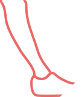

목표를 위해서라면
멈추지 않고
열심히!달려가는
퍼블리셔가 꿈이자 목표입니다.





About me
경력
이트라이브 | UX그룹 | 웹퍼블리셔
롯데정보통신 운영직 계약직 파견
2023,02,01 ~ 2023,04,30
경력
와이지앤 | 디자인팀 | 웹퍼블리셔
자사몰 리뉴얼 | 쇼핑몰 스킨 구축
2022,02,01 ~ 2022,12,31
교육활동
UX/UI 반응형 웹디자인&퍼블리셔 양성과정 | 그런컴퓨터아트학원
2021,06,05 ~ 2021,11,05
교육활동
리액트 프론트앤드 개발 실무 (React JS) | 디코드학원
2023,03.05 ~ 2023,06,24